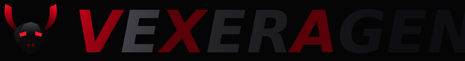
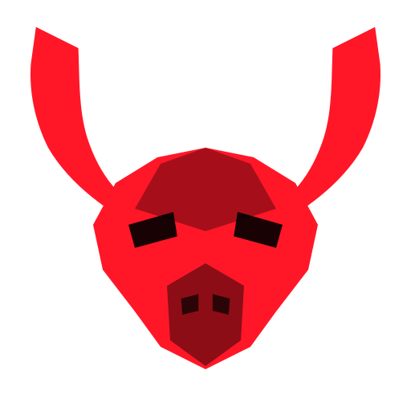
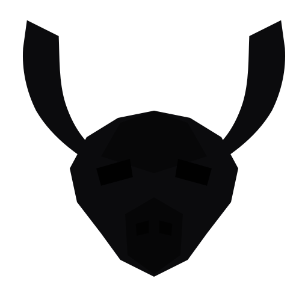
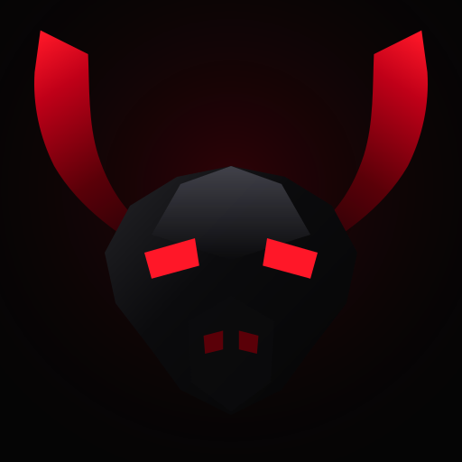

Vexer Agent — Design System
Darkness. Dominance. Precision.
VEXER AGENT
Black is the material. Red is the light that escapes from underneath it. The emblem is a bull forged from blackened metal — crescent horns, a broad sculpted skull, and a contained scarlet in the eyes. The wordmark is set monumental and italic, with V, X and A carrying the signal.
Primary lockup

Elements
 Emblem
Emblem
Single colour
Reversed
App iconApp icon — 512 / 192 / 96 / 48
Palette
Design tokens
| Emblem geometry | 64 × 64 viewBox, symmetric by mirror transform |
| Horns | Bovine crescent — thick root, belly out, tip curling up and inward |
| Eye | Angular slit, #FF1728, angled inward toward the brow |
| Wordmark | Montserrat 900 italic, VEXERAGENT fused, no space |
| Signature glyphs | V, X, A carry the scarlet gradient |
| Theme ramp | --dsw-static-vexer-50 … 900 in light and dark themes |
| Brand primary | --dsw-alias-brand-primary → vexer-500 / vexer-300 |
| Small-size floor | Silhouette holds to 48 px app-icon size |
Built as resolution-independent SVG in packages/client/ui-primitives/src/
(VexerBull.tsx, BrandWordmark.tsx). The emblem, wordmark,
favicon, app icon, and splash all draw from the same paths and the same six
palette values, so the identity is one system rather than five drawings.